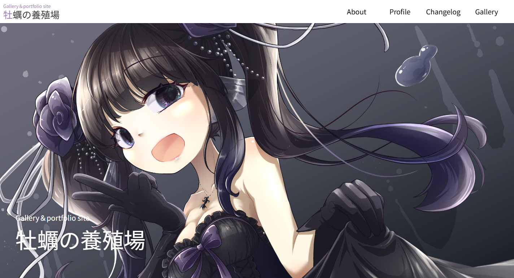
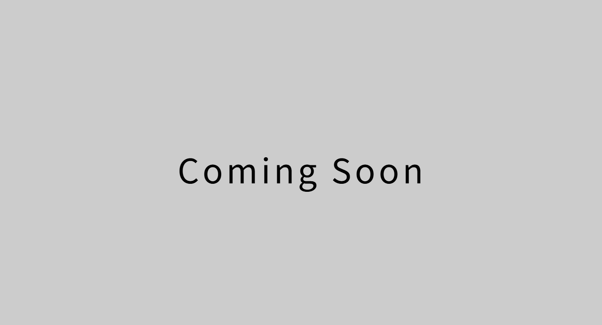

Web Coder &
Motion Developer
デザインの正確な再現、JS/TSによる動的実装、画像編集まで行えるWebコーダー
PCとSPのデザインの間を滑らかに繋ぎ、少し複雑なアニメーションも対応可能です
Works実績
Demo Sample / 自主制作
-

イラストレーター向けポートフォリオサイト
- 自主制作
- LP
- HTML
- CSS
- TypeScript
- Git Hub
- デザイン
- イラスト執筆
自身の作品を使用し、シンプルに紹介するサイトとして作成。
-

作成中 - コーディングサンプル
- 自主制作
- HTML
- CSS
- TypeScript
- React
- GitHub
- figma
AI生成によるデザインをもとにWebサイトをコーディングし、Reactを用いたコンポーネント設計や再利用性を意識した実装を行いました。機能追加や修正にも対応しやすいよう、保守性を考慮したコード設計を心がけています。
※AI生成画像の一部は素材として利用できないものがあったため、フリー素材などで代替し、デザイン全体の雰囲気を損なわないよう調整しています。
Skills 技術
HTML5
CSS3
JavaScript
jQuery
TypeScript
WordPress
Git
GitHub
Photoshop
Figma
-
HTML / CSS
Figmaなどのデザインを忠実に再現し、画面幅にお応じて滑らかに伸縮するリキッドデザイン・レスポンシブ化を構築できます。また、CSSにjava Scriptを組み合わせたアニメーションを実装できます。
-
JavaScript / jQuery / TypeScript
実務で求められる主要なUI（ハンバーガーメニュー、スライダー、モーダル、スクロールアニメーション等）の実装とカスタマイズが可能です。
-
WordPress
ワードプレスでのテーマ作成やウィジェットの追加作業の実務経験があります。テーマを1から構築した経験があります。
※セキュリティ対応につきましては、一般的な対策プラグインの導入や基本設定などの一般的な対策の範囲で対応できます。高度なセキュリティ構築などは専門外となっています -
Photoshop / Figma
コーディングに必要な素材の切り出し・画像編集が可能です。illustratorの使用経験もあります。
-
Git / GitHub
Gitを用いたバージョン管理システムの業務経験に対応可能です。
コマンドによる基本操作を理解した上で、実務ではSourcetree等のGUIツールを使用しています。
※当サイトは勉強のため、Git管理はGUIツールを使用せず、コマンドを用いて作業しています。 -
勉強中
React / GSAP / ウェブデザイン
About Me私について
Kakiikada
2018年2月、広島から上京し、未経験で現在の企業に入社。現在東京在住。社内でWebコーディング・フロントエンドを学び、現在はSESとして現場で活動しています。
リモート・出社ハイブリット可能。条件によりフル出社も可能。
稼働開始時期は営業にお問い合わせください。
Infomationご案内
本ポートフォリオに関するお問い合わせ、および案件のご提案や面談のご調整につきましては
弊社の営業担当まで直接ご連絡いただけますようお願い申し上げます。